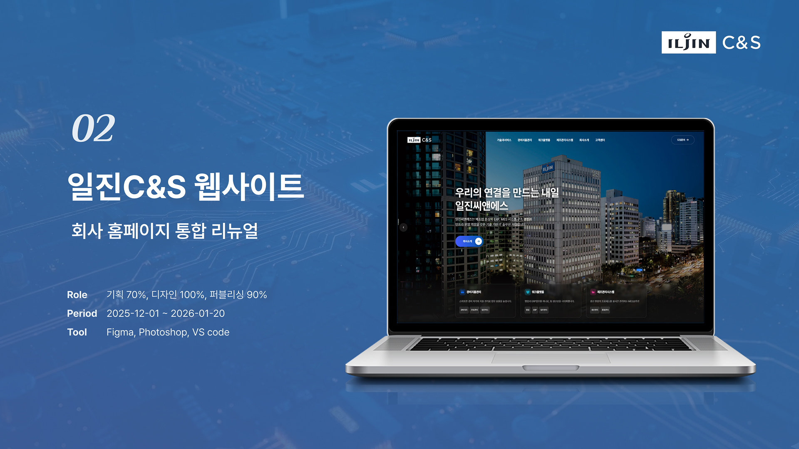
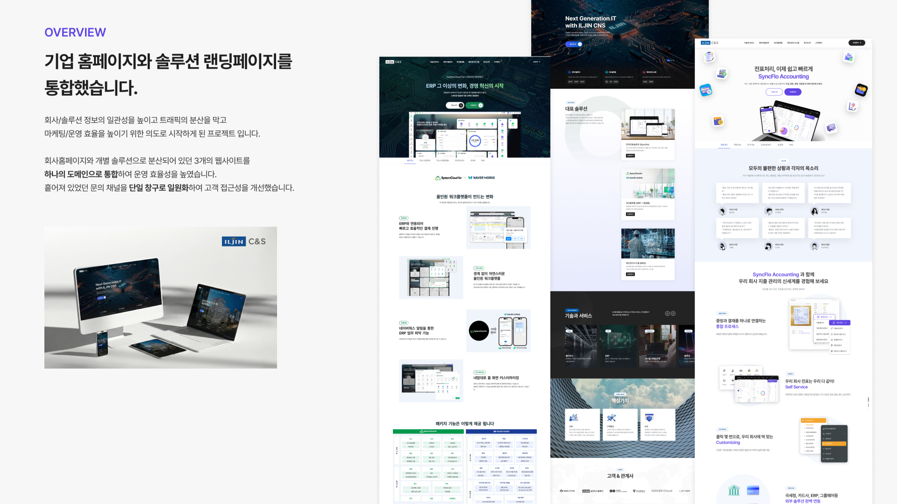
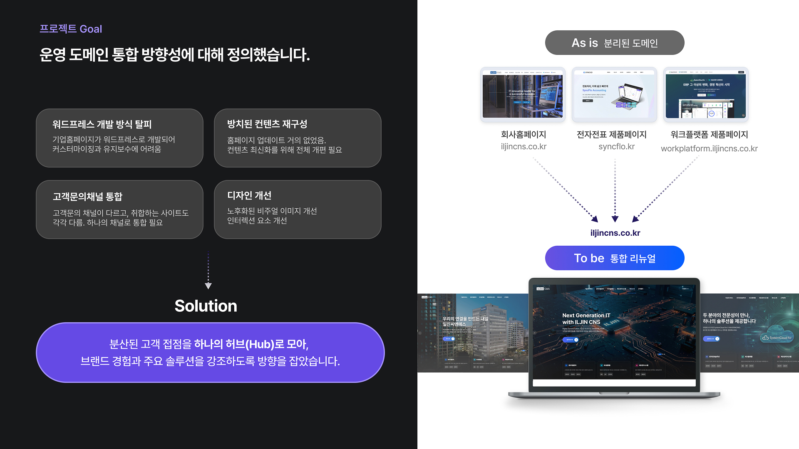
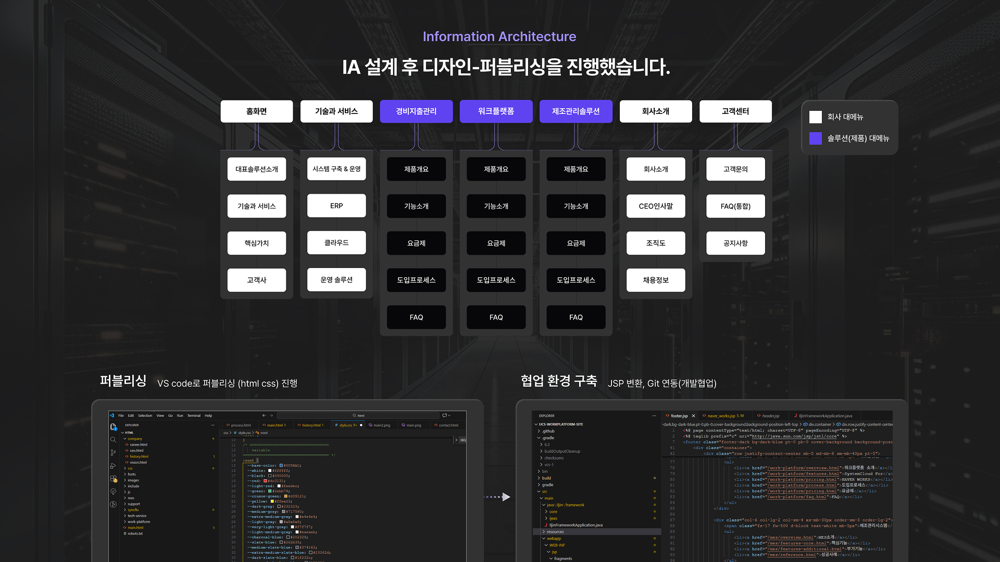
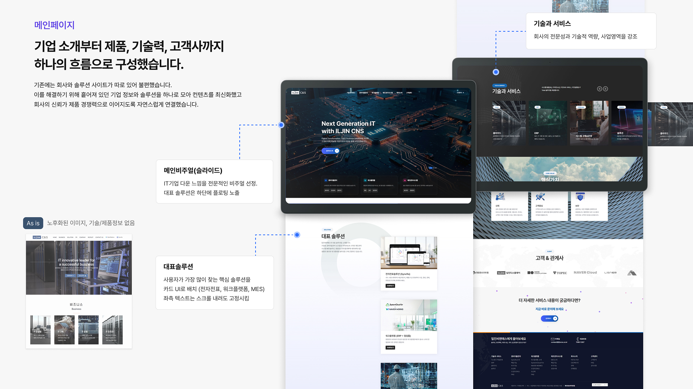
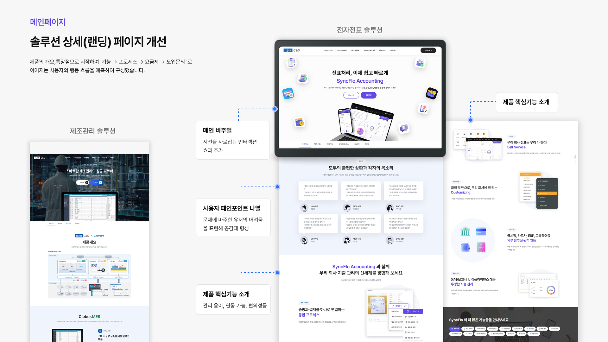
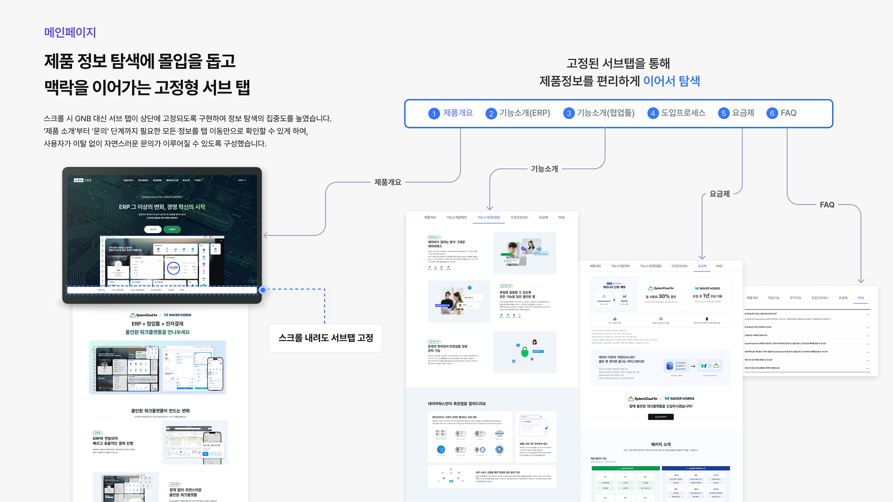
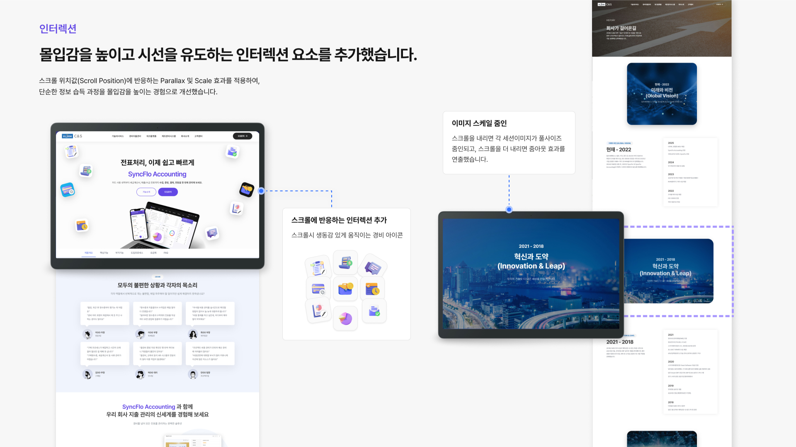
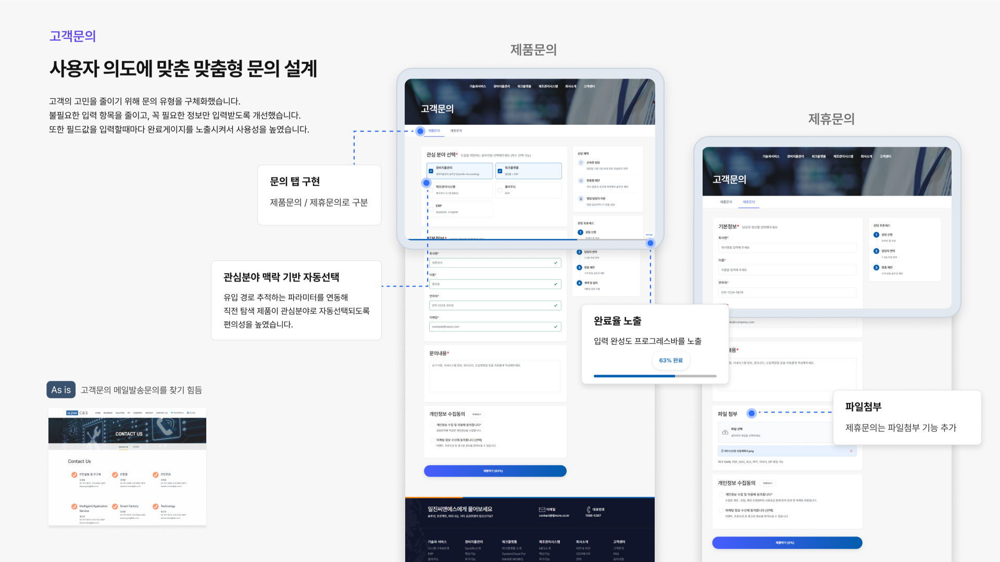

기업 서비스
임직원 중심의 내부 업무 시스템을 사람 중심으로 재설계.
노후화된 그룹웨어를 현대적인 UX로 전환하고 업무 효율을
높이는 기업 서비스 리뉴얼 프로젝트를 담당했습니다.

10년 이상 운영된 레거시 그룹웨어는 사용성이 크게 떨어져 임직원들의 만족도가 낮았습니다. 다양한 부서의 실무자 인터뷰와 사용성 테스트를 통해 핵심 불편 사항을 체계적으로 발굴하고 우선순위를 정립했습니다.



기업 서비스 특성상 수백 명의 임직원이 매일 사용하는 시스템인 만큼, 학습 비용을 최소화하면서도 업무 처리 속도를 높이는 것이 핵심 목표였습니다. 친숙한 패턴과 일관된 인터랙션으로 적응 부담 없이 자연스럽게 사용할 수 있도록 설계했습니다.



레거시 시스템의 리뉴얼은 단순한 UI 개선이 아닌, 오랜 기간 형성된 사용자 습관을 이해하고 그 안에서 변화를 이끄는 작업이었습니다. 저항을 최소화하면서도 경험을 개선하는 점진적 변화의 중요성을 배웠습니다.

